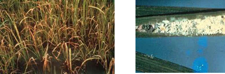
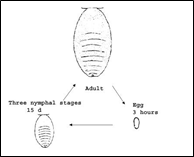
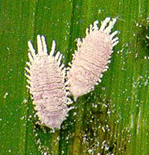

PESTS OF RICE :: Major Pests :: Mealy Bug
6. Mealy bug: Brevennia rehi (Pseudococcidae: Hemiptera)
Distribution and Status: Tamil Nadu, Andhra Pradesh, Karnataka, Orissa, Madhya Pradesh, West Bengal and Kerala in India, Bangladesh, Thailand |
 |
Field damage caused by mealy bugs (IRRI)
|
 |
Bionomics: The mealy bug is small reddish white, soft-bodied, wingless insect covered with filamentous materials. It lays 126-139 eggs in the leaf sheath and reproduces parthenogenetically. The egg period 1-2 days; nymphal period 17-34 days, nymphs remain within the leaf sheath and suck the plant sap. |
Management
1. Parasitoids such as Adelencyrtus sp., Xanthoencyrtus sp. and Dolichoceros sp. and coccinellid predators can be utilized.
2. Remove the grasses and trim the bunds during the main field preparation before transplanting.
3. Remove and destroy the affected plants.